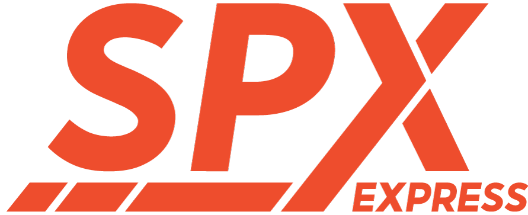

Amos
Staff Logistik / Warehouse Professional
Unduh CV (PDF)
Staff Logistik / Warehouse Professional
Unduh CV (PDF)Profesional di bidang logistik dan pergudangan dengan pengalaman kerja selama 2 tahun. Ahli dalam mengoptimalkan rantai pasok, manajemen stok gudang (Stock Opname), serta administrasi logistik yang presisi. Berdedikasi tinggi pada efisiensi operasional dan akurasi data.

Staff Logistik | 2 Tahun